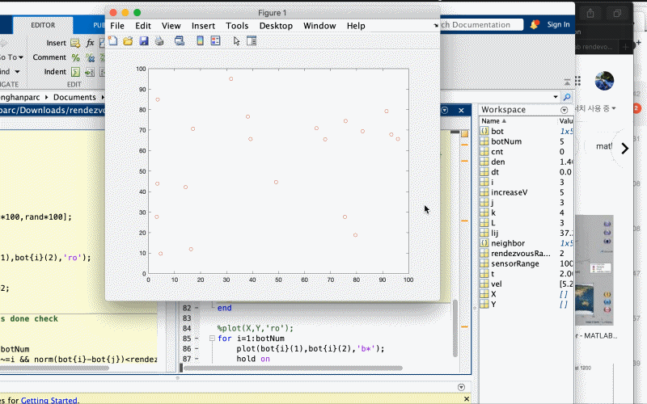
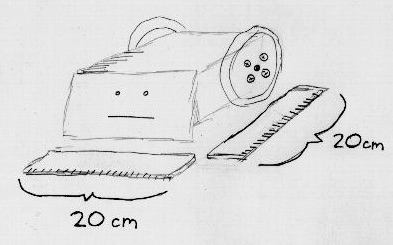
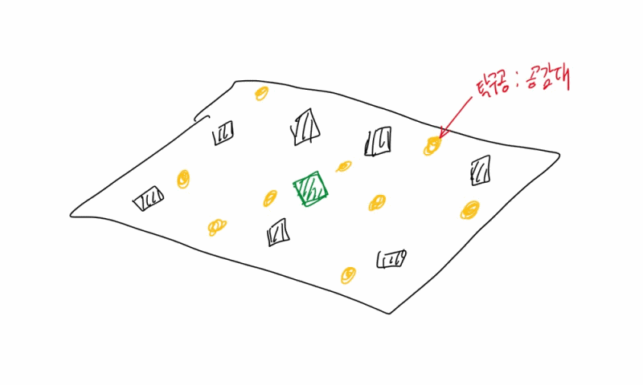
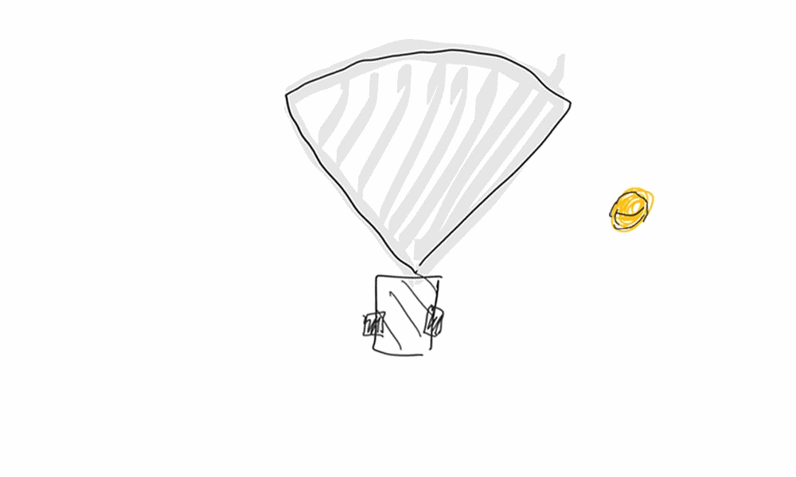
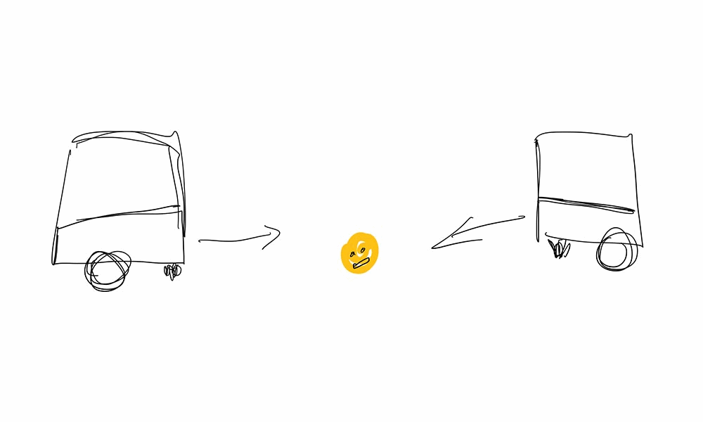
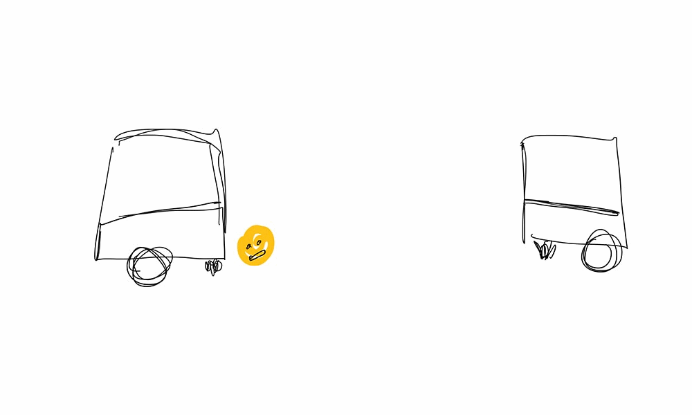
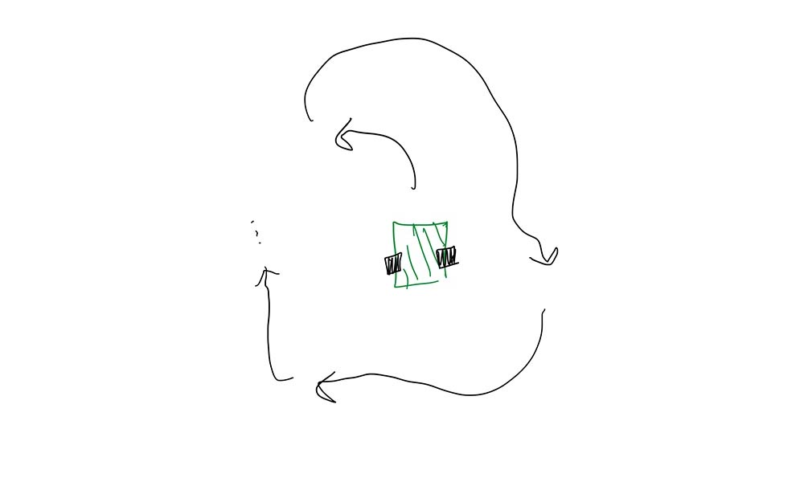
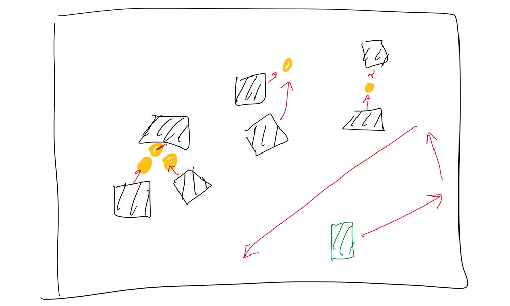

background mathmatical modeling physical model how-to

홍익대학교 '자동차기술융합전산실습(김종혁 교수님)' 과제 예시 시뮬레이션
지난 학기, 전공 관련해서 수강한 아두이노 IoT 수업에서 로봇 여러개의 움직임을 시뮬레이션하라는 제어공학 과제를 내 주셨다. 위의 시뮬레이션은 '서로 다른 위치에 있는 20개의 로봇을 한 곳으로 모이게 하는' 코드를 매트랩이라는 소프트웨어로 돌려본 것이다.
내가 느끼는 외로움은 어떤 모양일까? 어떤 다이내믹스를 가지고 있으며, 어떻게 시각화할 수 있을까?

robotroom.com/SumoRules
이런 로봇이 있다. 이건 나다. 바퀴가 두 개 달려 있어서 회전 등 자유로운 주행이 가능하다. 그리고 얼굴 뒤엔 카메라가 달려 있다.

공감대의 관점에서 사회를 모델링해 보자. 검정색 로봇들은 타인이다. 탁구공은 '공'감대고, 초록색은 나다.

이 타인들은 공감대가 될 수 있는 관심사(공)을 찾아 회전하다가 공이 보이면 달려나간다.

이들은 같은 공감대를 가진 타인과 가까이 다가가기도 하고

핑퐁을 주고받기도 한다. 부러운 녀석들..

나는 내가 해보고 싶은 새로운 일들이 많아서 그런 것들을 쫓아다니느라 바쁘다.

멀리서 보면, 타인들 사이에 끼지 못하고 그냥 배회하는 것처럼 보일거다.